MARKET FLOW RESEARCH
Independent research on crypto market microstructure. We study second-by-second order-book and order-flow data across major coins.
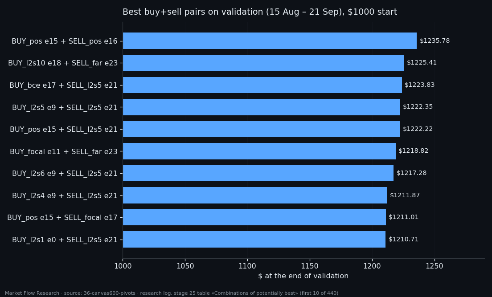
Buy-and-sell botOne Account, Two Networks — 440 Buy-and-Sell Pairs on Validation, and Why the Best Still Trails the Market
A buy network and a sell network were put on one $1000 account under one set of rules: one trade per 2.3% zigzag leg, take-profit 1.9%, stop 2.5%, and a signal from the other side closes the position. Every one of the 22 "potentially best" buy networks was paired with every one of the 20 sell networks — 440 pairs — and each pair traded the full validation month. 438 of them ended in profit. The best made $1235.78, a gain of 23.6%. Buying and holding BTC over the same month made about 29%.
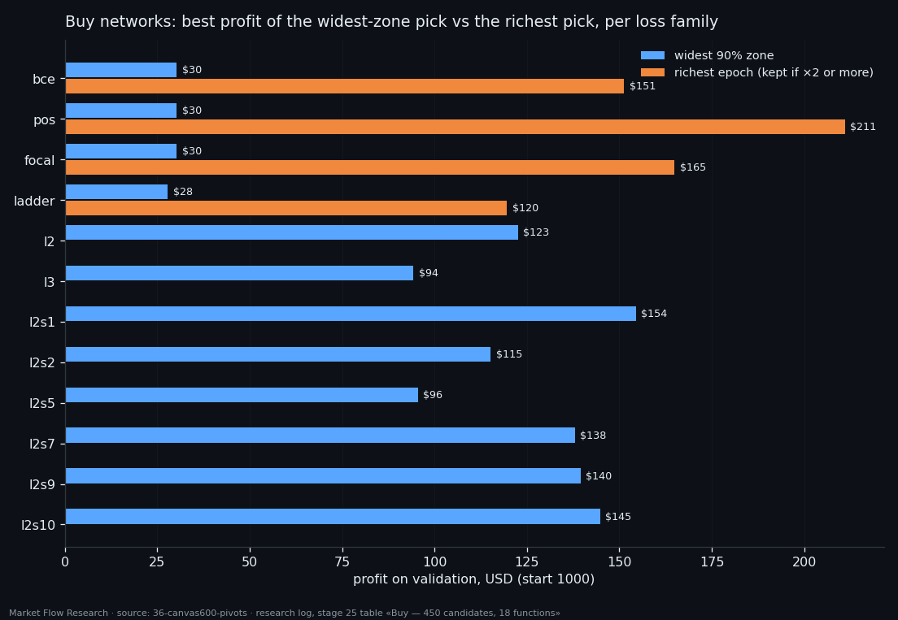
Potentially best networksPicking a Network by the Width of Its Good Zone, Not Its Best Point — 42 "Potentially Best" Networks
Every trained network becomes a signal through two knobs: the window W over which its probabilities are summed and the threshold θ that sum must reach. Pick the single best cell of that grid and you usually pick noise. So each of 450 buy candidates and 75 sell candidates was traded on a 72 × 50 grid of W and θ, and for each one we measured how wide the area is where profit stays within 90% of its best. In every loss family the network with the widest such zone was kept — plus, if another epoch earned more than twice as much, that one too. The result: 22 buy and 20 sell networks, all scored on the same validation month.
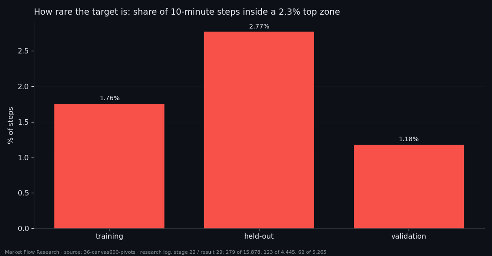
Sell pivotsTeaching the Network to See Tops — Sell Pivots on BTC, One Change and Eighteen Training Runs
The bottom-finding network that powers our buy-only bot was rebuilt for the other side of the market with exactly one change: the label is now a 2.3% top zone instead of a bottom zone. Same canvas, same split, same eighteen training runs with different loss functions. Tops turned out to be rarer and harder: on validation only 62 of 5,265 ten-minute steps sit in a top zone. Plain losses reached an F1 of 0.047–0.084 against a base of 0.023; the "ladder" target that accepts a two-hour neighbourhood reached 0.19–0.21 against 0.13. Fine-tuning further did not help, and one loss never fired at all.
 Rule 7.1
Rule 7.1When a "Fake" Buy Signal Is Really a Deeper Bottom — Rule 7.1, Tested on Validation and Unseen Days
Our buy-only bot throws away a buy signal if price has not risen 2.3% since the previous signal — a repeat call inside the same dip is treated as fake. On the nine unseen days after validation that filter rejected 36 signals and left one trade. Rule 7.1 asks one more question before rejecting: did price, between the last peak and now, make a lower bottom within 1% of the current price? If so, the signal is real, and the take-profit is measured from that lower bottom. With the rule, fakes on unseen days fell from 36 to 0, trades rose from 1 to 3, and the result from $1008.45 to $1034.12.
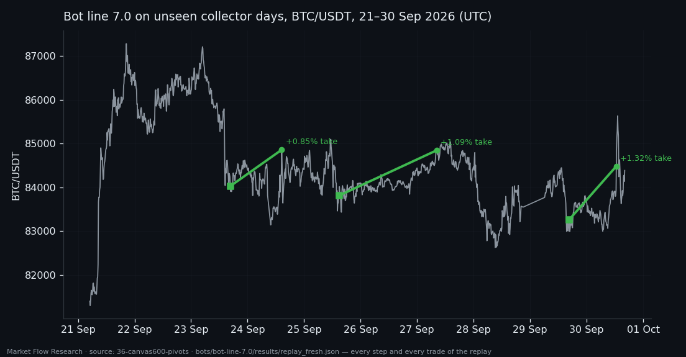
Bot 7.0 on unseen daysA Buy-Only Bot on Nine Days It Never Saw — Three Take-Profits and a Draw With Buy & Hold
The buy-only bot from the previous study had one weakness we wrote down plainly: its window, threshold and stop were chosen on the same 38 validation days it was then scored on. So we froze it and let it walk through the days the data collector recorded after validation ended — 21 to 30 September 2026, nine days nobody had looked at. It opened three trades and closed all three at take-profit, no stop-outs: $1000 became $1032.92. Buying and holding over the same steps gave $1035.51. A clean run, and a draw with the market.
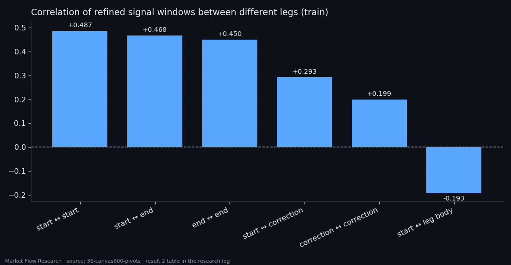
Canvas and the buy botFrom a Canvas of the Whole Leg to a Buy-Only Bot — What Survived, and What It Earned
The last study of the series put a whole leg — and 50 rows on either side — onto one canvas and asked a network to mark pivots and corrections on it. On labelled windows it hit 38% of pivot zones; run live over the series, 5% of its pivot calls landed. A longer canvas, 160 hours on 100-second records, and windows of uniform length lifted precision to about 30%. Its best trick: 29% of pivots flagged a median 2.4 hours before the zigzag confirms them. The result became a paper-trading buy-only bot for BTC. On 38 days of validation it made +10.3% with eight trades and no stop-outs — while buying and holding made +36.6%, and its parameters were tuned on those same days.
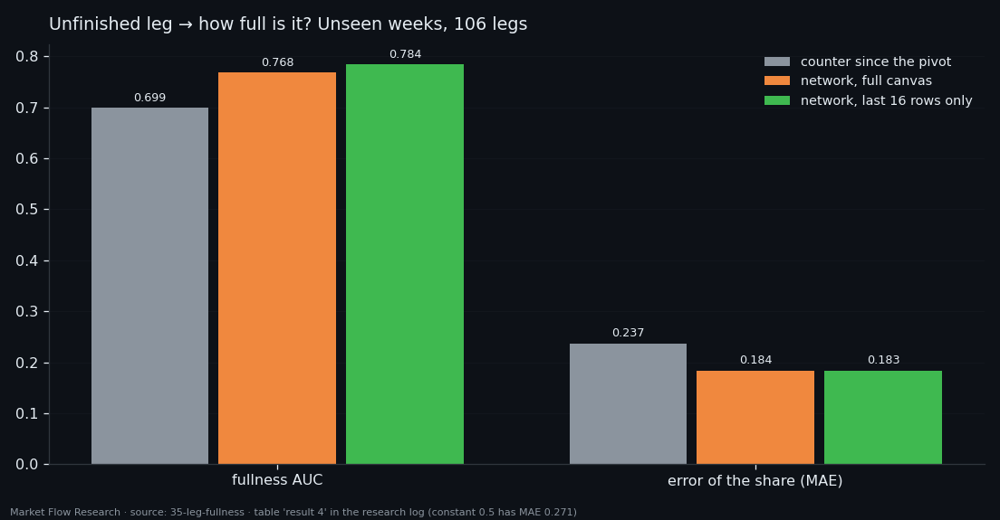
Leg fullnessHow Full Is This Leg? A Network That Finally Beats the Counter — by Reading Its Last Rows
Give a network the unfinished leg — everything from the last confirmed pivot to now, as one fixed-size canvas — and ask how complete it is. For the first time in this series a model beats the simple counter of events since the pivot on unseen weeks: fullness AUC 0.77 against 0.70, error 0.18 against 0.24. The surprise is where the knowledge comes from: the last 16 rows of the canvas do as well as all 500. On a 30-second standard with sliding windows the gap widens (0.78 vs 0.62), and the network locates a pivot inside its window with AUC 0.96. What it still cannot do cleanly is call "the leg is over" live: nine of ten such signals miss.
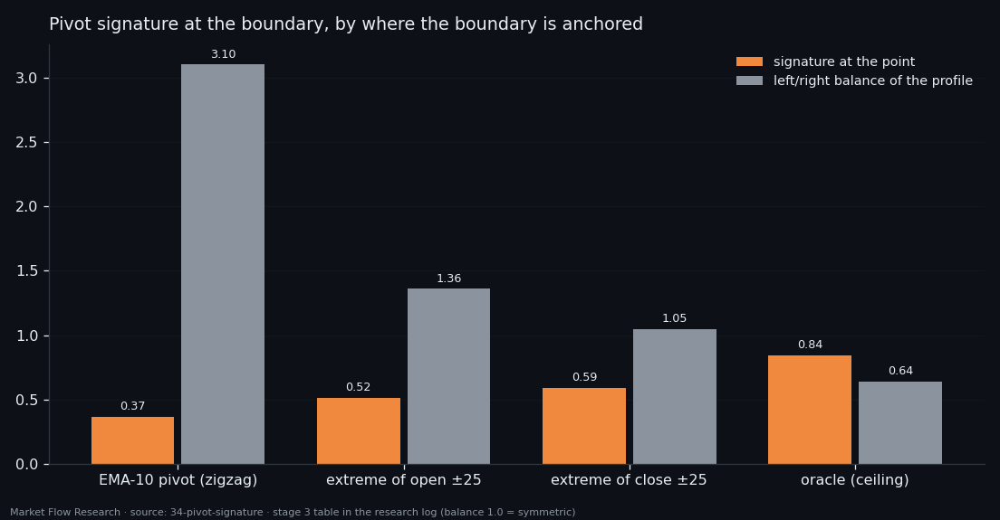
Where a leg endsWhere a Leg Really Ends — Four Events Earlier Than the Zigzag Says
We went looking for a unique, universal signature of a pivot in 531 legs of six coins. The book turned out to be a mirror — tops and bottoms read with one ruler once buyer and seller features swap. The zigzag's pivot turned out to sit in the wrong place: the true boundary of a leg is the extreme of the closing price within ±25 events, four events earlier, and there the signature becomes symmetric and one event sharp. What we did not find is uniqueness: a 0.5% correction carries the same signature, weaker. The signature measures the strength of a turn — not whether the leg is over.
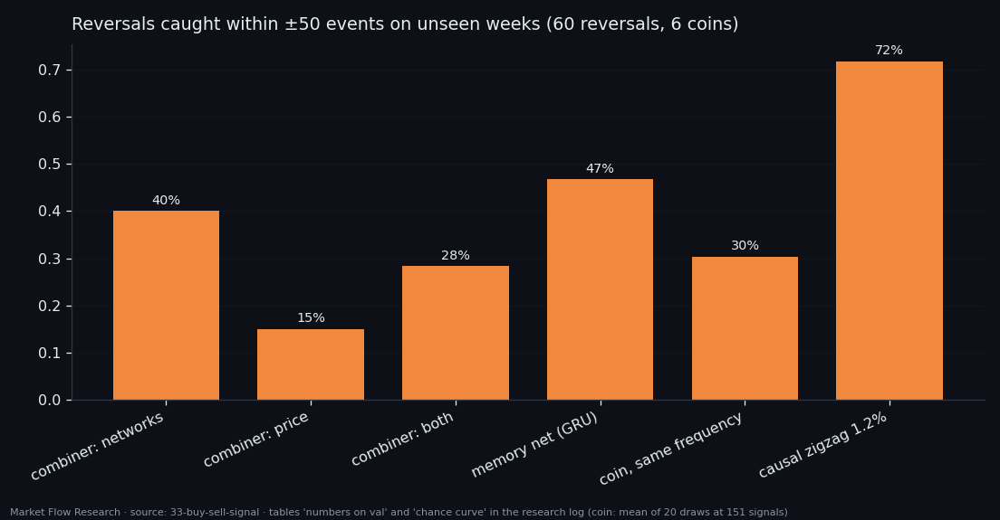
Buy / sell from networksCan Our Networks' Outputs Become a Buy/Sell Signal? A Simple 1.2% Zigzag Says No
Our networks each say something about a leg: it is ending, it is 80% done, this is a reversal zone. None says "buy" or "sell". So we combined their outputs into one decision and raced it against three rivals: each channel alone, a coin with the same number of signals, and a causal 1.2% zigzag on the same price. The combination found 40% of reversals within ±50 events — where chance at that frequency finds 30%. The plain zigzag found 72%. With $1,000 on BTC, the networks ended level with the coin; the zigzag ended next to buy-and-hold. What the networks do know is where a reversal *was*.
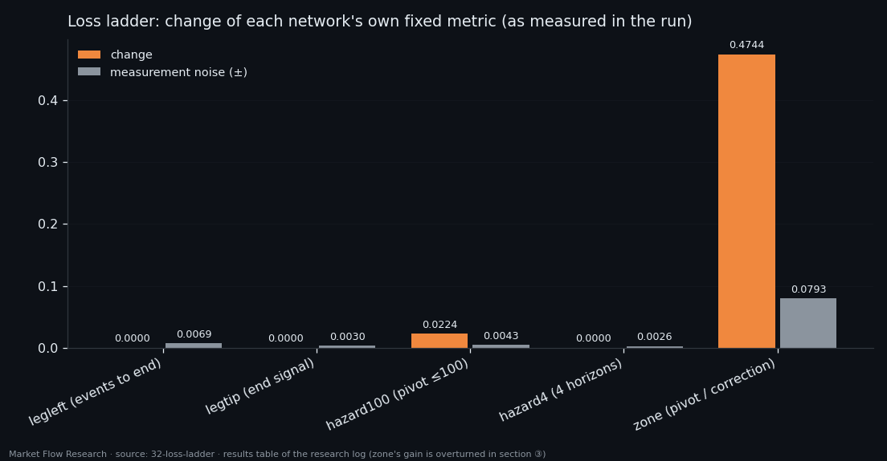
Loss ladderA Loss Ladder for Five Trained Networks — and the Biggest Win That Was a Dropout Bug
We took five approved networks from this series and tried to improve them without retraining: change the loss function between epochs, raise the penalty step by step, keep an epoch only if a fixed metric on validation improves. 124 attempts, 6.9 machine hours. One network truly improved — the one whose own training had stopped too early — and it improved from a smaller learning rate, not a new loss. The spectacular result, +0.47 on the zone model, vanished when the saved weights were measured again in a separate process: the GPU backend had left dropout switched on during evaluation.
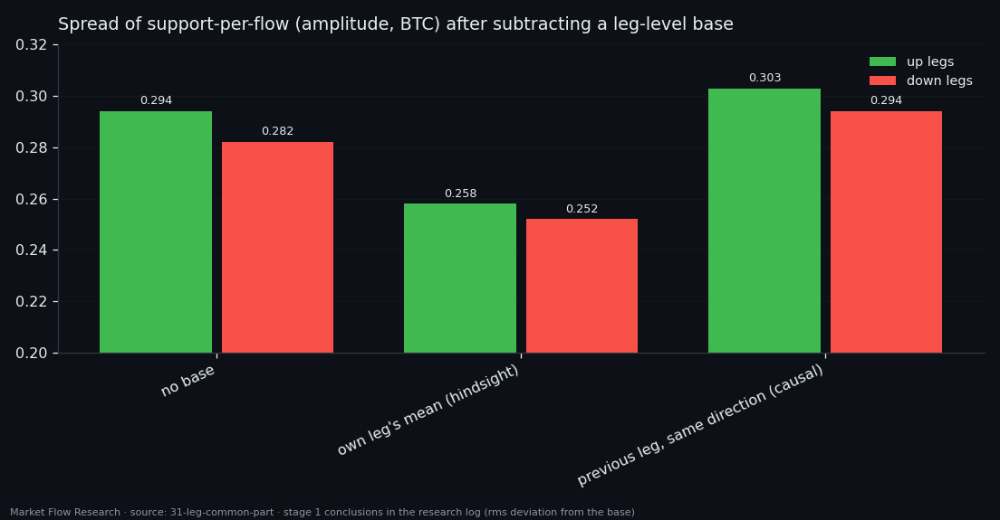
One axis: normal → correction → pivotA Correction and a Reversal Are One Event of Different Strength — What the Book Shows Inside a Leg
Every leg of a zigzag holds its own common level in the order book, and removing it would make the unusual events stand out — if only it could be known in time. It cannot: the previous leg predicts it so poorly that subtracting it adds noise. What the book does show is a reversal zone of about 15 events with a clear signature — and the same signature, weaker, inside every correction. Normal event, correction, pivot: one axis. Models find the pivot zone at AUC 0.72–0.75 and put 8.5× the base rate in their most confident answers, but no memory, loss or penalty separates a pivot from a correction without breaking the correction channel.
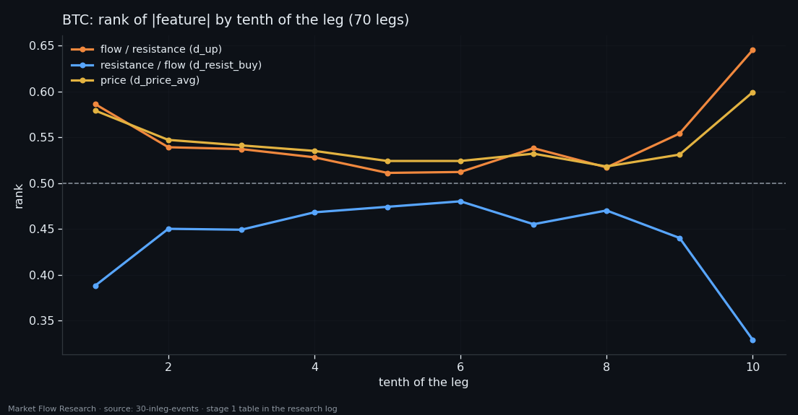
Edge, not endThe Book Sees the Edge of a Leg, Not Its End — Event by Event on BTC
Event by event on BTC, every feature of our order-book class carries its place in the leg: a U-shaped profile that holds inside individual legs, with the same sign in 80% of them. But what it reads is the distance to a pivot, not the progress through the leg. It tells a real end of a leg from a shallow 0.5% correction (AUC 0.669), and loses that ability as the correction deepens — at 1.5% there is nothing. A detector of "this is the tail of a leg" lifts precision up to ×19 over the base, yet cannot tell a tail from a head. The book knows it is at an edge; it does not know which one.
 The class along the leg
The class along the legThe Order Book Along a Leg — Slow Legs, Thin Edges, and a Signal at the End That Beats Chance ×4.6
We laid the seven features of our best order-book class along 554 zigzag legs of six coins. Every feature marks the edges of a leg, with the book thinning per unit of flow right before a pivot. The same features tell a short leg from a long one early — not the exact length, but its distribution. A memory network trained on "the last 5% of the leg" puts 23% of its loudest calls there, against 5% by chance. And the honest cost is written next to each number: detecting a new leg takes 12–16 events, a price-path detector still does better, and the zigzag labels themselves arrive late.
 Edges of the leg
Edges of the legA Leg Moves at Its Edges — and You See the New One Only After It Starts
Split every 2.3% zigzag leg of six coins into tenths and measure where the price actually travels: 39% of the move happens in the first and last tenth, three times more per tenth than in the middle. The start of a leg reveals its direction and its volatility, never its length or its ending. A detector for "a new leg has begun" reaches 63% precision 21 events after the pivot and 98% after 31 — confirmation, not foresight. And twelve numbers about the price path beat every order-book class in the project at that task.
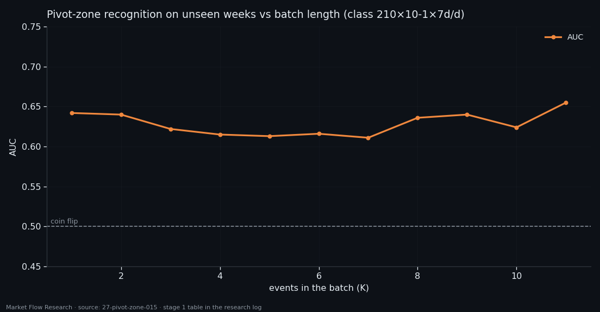
Pivot zone ±0.15%The ±0.15% Pivot Zone — Seventeen Ways to Describe an Event, One Honest Ceiling of 0.70
Near every 2.3% pivot, price lingers within 0.15% of the turning level for a while — a median of 11 events, about 38 minutes, 2% of the whole series. Is that stretch recognisable from the order book alone? We asked gradient boosting on every event of six coins, with batches of 1 to 11 events and all 17 event classes this project has built. The answer is a consistent "a little": AUC 0.61–0.66 on the main class, 0.701 at best on raw book levels — and at a working threshold, 95 hits bought with 6,725 false signals.
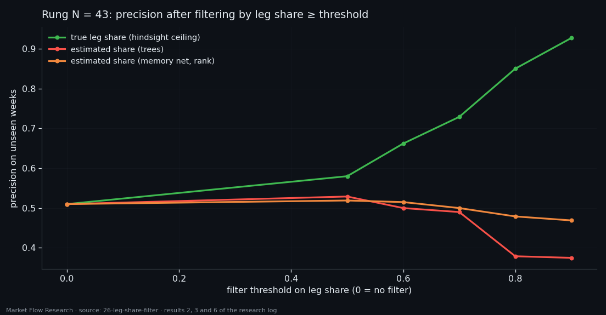
The perfect filter we cannot buildThe Filter That Would Lift Precision From 51% to 93% — and Why We Cannot Build It Yet
Half of the reversal-confirmation signals are false, and they share one trait: they point into the middle of a leg. A filter that knows how far along its leg an event really is removes 45 of 49 false signals and not one true one — precision 51% → 92.7%. The catch is that "how far along" is only known in hindsight. Every causal estimator we built — trees, a memory network, ten loss functions, a 24-point grid — reaches an AUC of about 0.69 for "this is the last tenth of the leg", where the filter needs something near 0.95. With that estimate, the filter cuts true signals as fast as false ones.
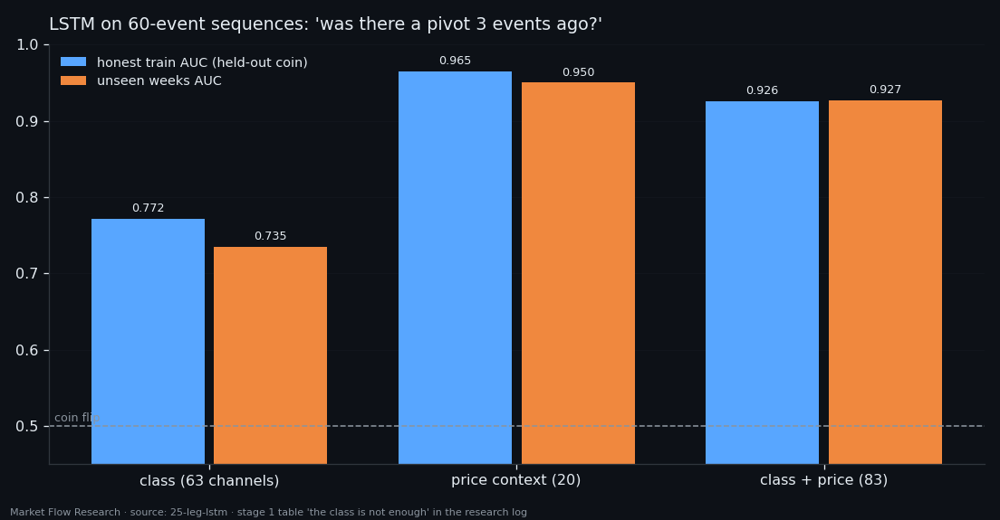
Memory vs aggregatesCan a Memory Network Rebuild Context From the Raw Sequence? Not From the Order Book
Trees won the reversal ladder with hand-made aggregates: five numbers about recent extremes over four look-back windows. A memory network should not need them — the price change of every event is already inside the class, and integrating it would rebuild the whole context. We gave an LSTM 60 events of raw class, of price context, and of both. The class alone reached an honest AUC of 0.77; price context alone, 0.965. Adding the class to price made it worse. And trees on five aggregates still found reversals two and a half times more precisely than the network.
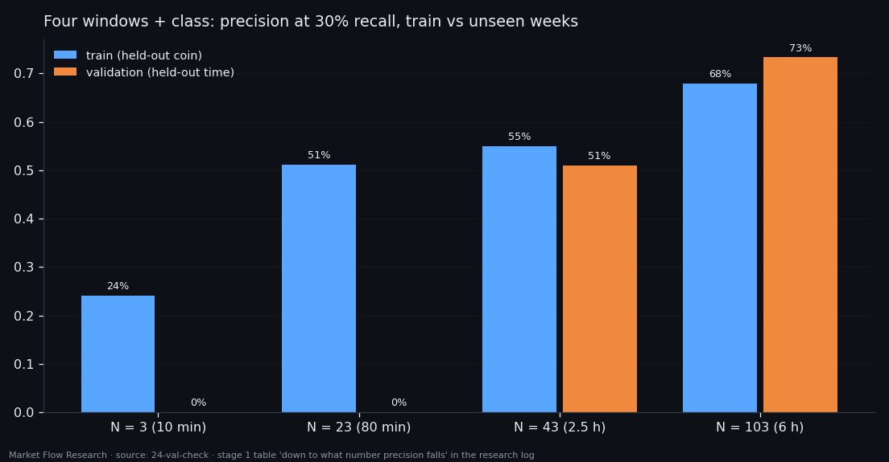
Held-out timePivot Confirmation on Three Unseen Weeks — Precision Holds, the Threshold Does Not
The reversal ladder of the previous article was scored on a held-out coin — but in the same weeks it trained on. Here the models trained on everything up to 14 August 2026 and were scored on the three weeks after, six coins, with the threshold fixed in advance from honest training scores. Precision did not fall: 51% two and a half hours after a pivot, 73% after six hours, on 88–93 reversals. What broke instead was the threshold itself — at two rungs of the ladder the models went completely silent while their AUC stayed above 0.9.
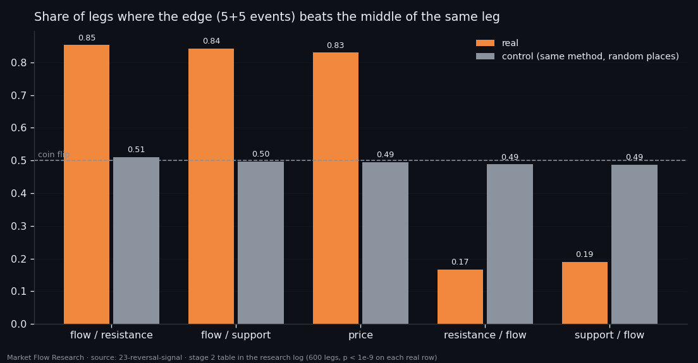
Where, not whatA Reversal Is a Place in the Move, Not a Shape in the Book — Five Causal Numbers Beat 62
The edge of a leg really is different from its middle — in 85% of 600 legs, by a factor of about 3.8, with a coin-flip control at 0.51. Yet no single 10-event batch can be picked out of the whole dataset by its book numbers. Five tests later the reason is clear: what identifies a reversal is where you are in the move, not what the book looks like. Five causal numbers about recent extremes lift the hit rate 121-fold over the base; the 62 numbers of the class manage 3.8-fold and add nothing on top. Asked again every ten events with four look-back windows, "was that a pivot?" climbs from 26% after ten minutes to 71% after six hours.
 No reversal signature
No reversal signatureA Reversal Has No Signature of Its Own — One in Four Ordinary Stretches Looks Stronger
Around a 2.3% pivot the order book changes in multiples: flow ratios two to five times bigger, book-per-flow ratios three to seventeen times smaller. That sounds like a fingerprint. It is not. One in four continuous 10-event stretches far from any pivot is stronger still, the strongest is 47 times stronger than the strongest reversal, and a neural network on all 630 numbers of a reversal batch reaches the same AUC as a straight line: about 0.70. The reversal is a shift of the same distribution, not a different kind of event.
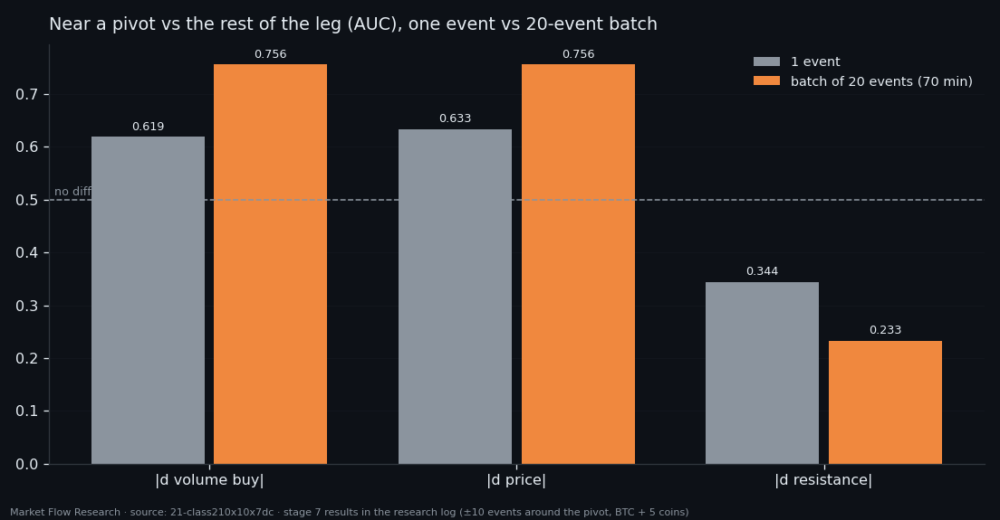
Derivatives of the bookDerivatives of the Order Book — Reversals Leave a Trace, Not a Warning
We rebuilt the basic event of this series from scratch: 210 seconds cut into ten 21-second blocks, book levels divided by the volume of their own block, then first derivatives from block to block — on six coins, 402,731 events. The new description sees reversals clearly: around a pivot there is more flow and a thinner book per unit of that flow. But almost all of it sits in the first tenth of the next leg. The book reacts to a reversal far more than it foretells one. The last class of the family, derivative over derivative, lifts a detector of the reversal zone to AUC 0.700 on fresh legs — and becomes the workhorse of every study that follows.
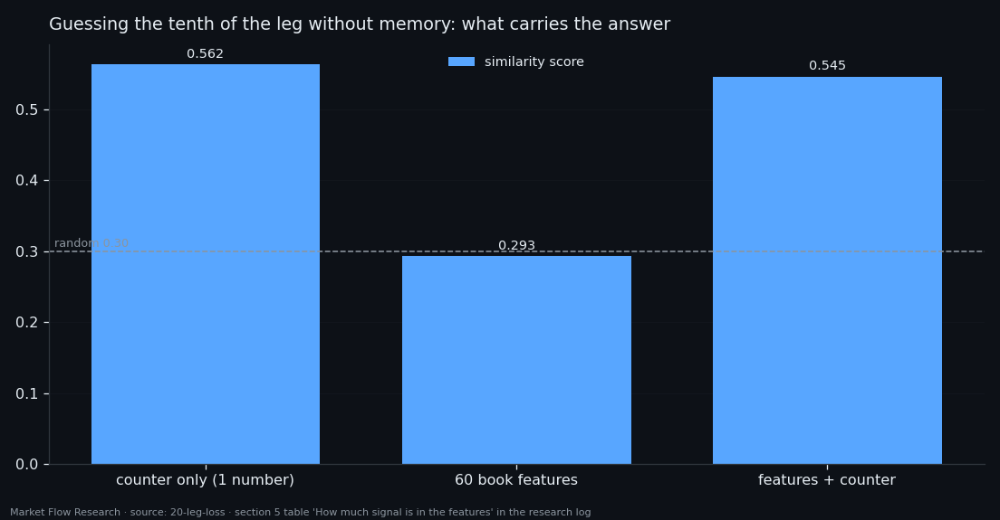
Ask what the data answersChange the Question, Not the Network — "Will the Leg End Soon?" Scores 0.73 Where "Which Tenth?" Scored Nothing
The memory network of the previous study learned to count instead of reading the market. We opened its loss function and found why: counting was the exact optimum. Then a plain perceptron settled it — the 60 order-book numbers of an event carry zero information about which tenth of the leg it sits in. They do carry information about something else: whether a pivot is close. Rebuilt around that question — four horizons, one monotone curve — the same data scores an average AUC of 0.73 across six coins. The order book shows the exhaustion of a move. It still does not show its direction.
 End of the leg
End of the legA Memory Network Asked "Is the Leg Over?" Learned to Count, Not to Read
An LSTM with attention walked each 2.3% zigzag leg event by event and, at every step, said how far along the leg was. Across five label designs, one coin and then six, it never once placed its end-of-leg signal inside the last tenth of a fresh leg. What it learned was a clock: a steady count from the start of the leg. When the zigzag stopped handing it that start — memory reset only when the network itself called a pivot — it did not call a single one in 42,192 events.
 Four numbers, 28 cells
Four numbers, 28 cellsFour Numbers per Event and a 28-Cell Answer — Where the Signal Really Came From
The previous networks read each book feature through 13 exponential averages and topped out at a correlation of 0.29 with the leg target. Strip the averages away and the same features, raw per event, correlate at 0.09. So the link was made by the smoothing, not by the snapshot. We then gave a transformer six coins, 345,000 training windows and a new kind of output — 28 cells instead of one number — to stop it hiding in the middle. It stopped hiding. It did not start hitting: 5.4% of real pivot-zone signals, with false calls a day away.
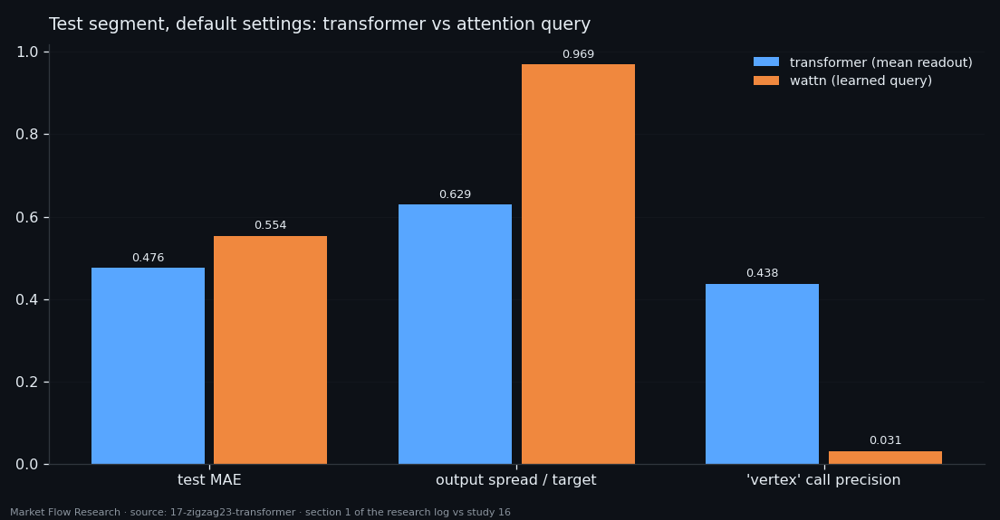
ReadoutSame Data, Different Readout — How a Transformer Fails Differently From an Attention Query
We repeated the previous study exactly — same 2.3% zigzag target, same pivot zone, same loss, split and seed — and changed one thing: how the network reads its own sequence. Averaging the 13 steps instead of letting a learned query pick them cut the error from 0.554 to 0.476 and made "vertex" calls 44% precise instead of 3%. Tuning then turned the same model into a noisy caller again. And past the end of the dataset, both readouts lose the direction. The readout decides how a network is wrong, not whether it is right.
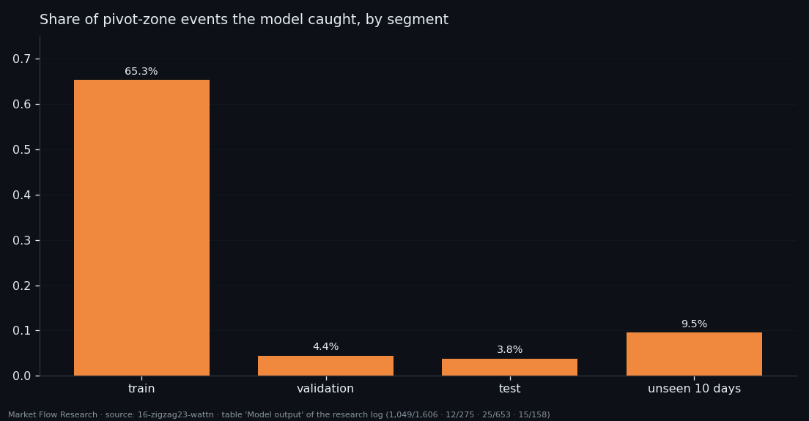
Pivot zone netA Network That Found the Pivot Zone — Only Where It Was Trained
We asked an attention network to do one specific thing: tell when price is near the end of a 2.3% zigzag leg — within 10% of the pivot and no more than 40 events from it. On the weeks it trained on it caught 65% of those zones. On validation, 4%. On test, 3.8%. On ten days after the dataset ended, its correlation with the target turned negative. This is a measured negative result, and the measuring tool it produced — the pivot zone — is what we carry forward.
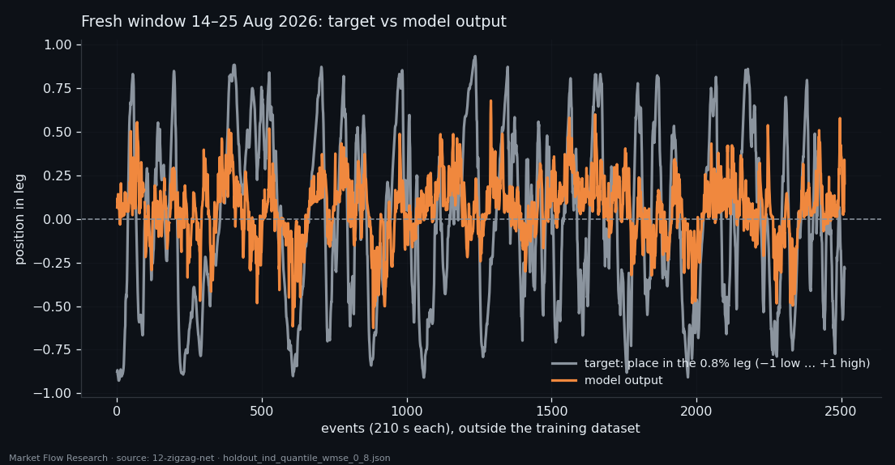
Zigzag netSix Networks Tried, the Winner Has 53 Parameters — Teaching a Model Where Price Sits in Its Leg
Correlations said the slow order book knows roughly where price sits inside its zigzag leg. So we trained networks to say it out loud: a number from −1 (at the low pivot) to +1 (at the high pivot), from four book features under thirteen averages. Six families on the same data, a time split with five walk-forward windows — and the linear model with 53 parameters won. On the final test it beats the constant for the first time (MAE 0.438 vs 0.446, sign 55.1%); on eleven fresh days outside the dataset, sign 60.7% on 44 legs. Small, consistent — and the reason is a loss that pays attention to the edges of the leg.
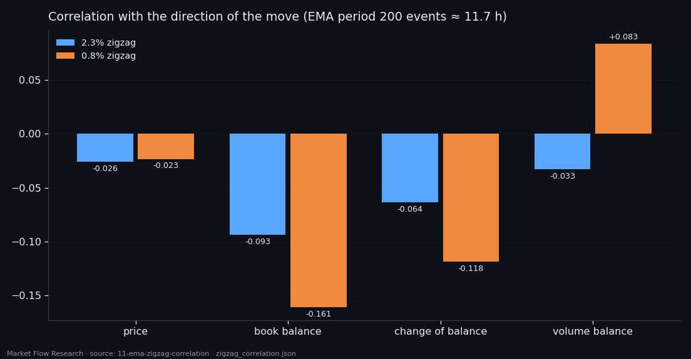
Slow book stateTwelve Hours of Order-Book State and the Direction of a Move — From 0.16 to 0.42
Does the order book, averaged over about half a day, know which way the current move is going? We smoothed four book features with exponential averages on 52 horizons from 35 minutes to 58 hours and correlated them with the direction of 2.3% and 0.8% zigzag moves on 40,242 BTC events. The raw answer is weak (−0.16 at best). Three changes of question — a price feature instead of price, the position inside the leg instead of the direction, and a zigzag drawn on the same smoothing — lift the ceiling to 0.42. That is 17% of the variance, from a description that ignores the last hour entirely.
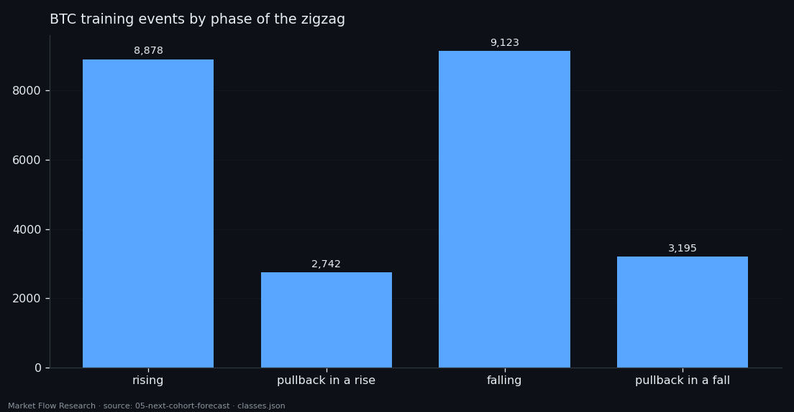
Next cohortPredicting the Next Phase of a Move From the Order Book — 832 Window Sizes, One Honest Ceiling
Every event of BTC's order book sits in one of four phases of a zigzag: rising, a pullback inside a rise, falling, or a pullback inside a fall. We asked a closed-form linear model to name the phase of the next event from the N events before it — and tried every N from 2 to 833. The signal is real from N = 2, peaks at 0.418 accuracy on about one zigzag leg of history against a 0.377 baseline, and is essentially binary: up or down, the pullbacks go unseen. The labels of the past alone would score 0.976.
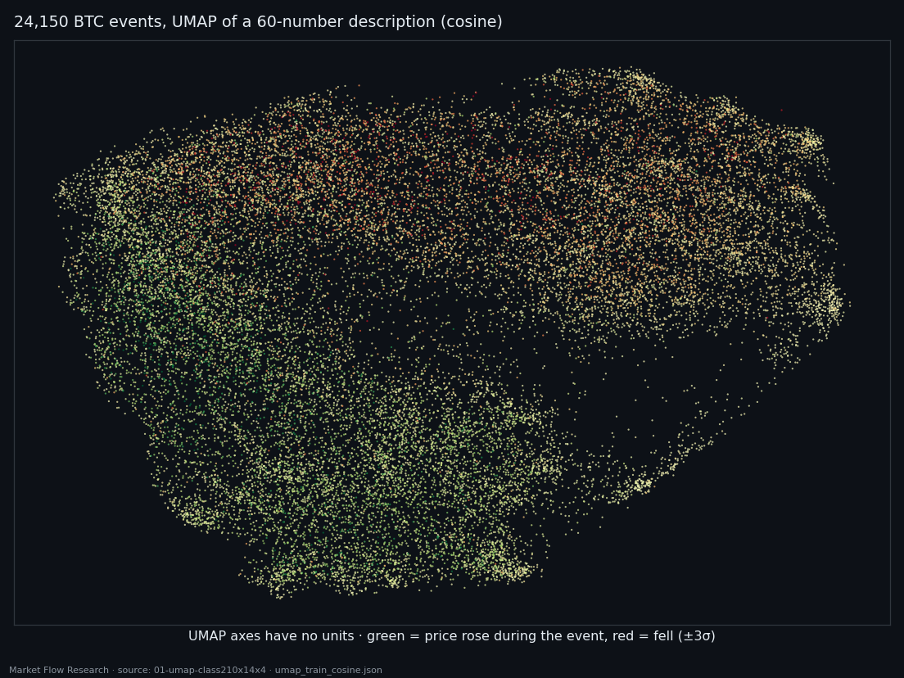
Legs and eventsA Leg Is the Sum of Its Events — and Size Beats Count
We cut the price of six coins into 210-second events and into 2.3% zigzag legs, then asked the simplest question a direction model has to answer: how does a leg actually make its move? Over 712 legs and 409,998 events the answer is exact — the leg is the sum of its events (0.999 on clean legs) — and surprising: up legs are only 51.9% up-events. The move is carried by the size of events, not by how many point the right way.
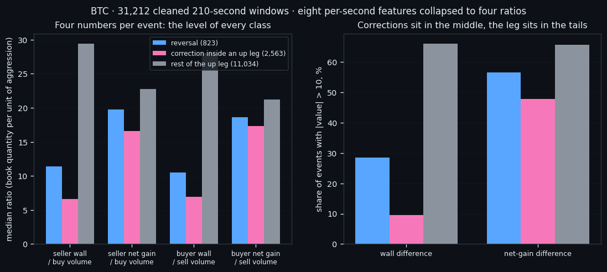
Corrections, not exitsA Detector for Corrections Inside a Move — and Why It Took a New Way of Measuring
We stopped measuring how loud the order book is and started measuring how much wall stands per unit of aggression — eight features collapsed into four ratios. On that new scale a class appears that we could not see before: corrections inside a move, 5,396 of them, events that already look like a reversal without being one. Three detectors find them at 0.94 precision on a held-out half, and an external 0.8% zigzag confirms the class survives after loudness is matched away (×1.69). For a bot, that is the difference between holding a trend and being shaken out of it.
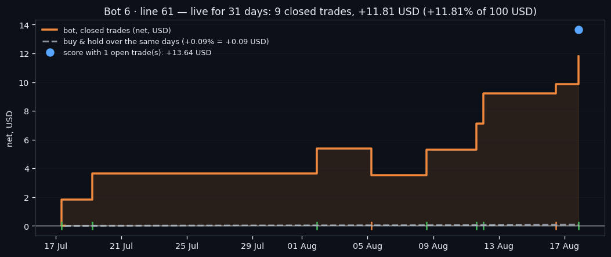
Line 61 liveBot 6, Line 61: Nine Trades, Eight Winners, and Why We Are Not Celebrating
Line 61 of Bot 6 holds one position at a time and has been live since 17 July 2026: 31 days, 9 closed trades, +11.81 USD on a 100 USD slot, win rate 89%. Its entry gate is agreement between two independent models plus a context check; its exits are a 2% target, a 4% stop and a hard 72-hour clock. This is the complete record, including the comparison with its twin line running the identical recipe — which is the part that keeps us honest.
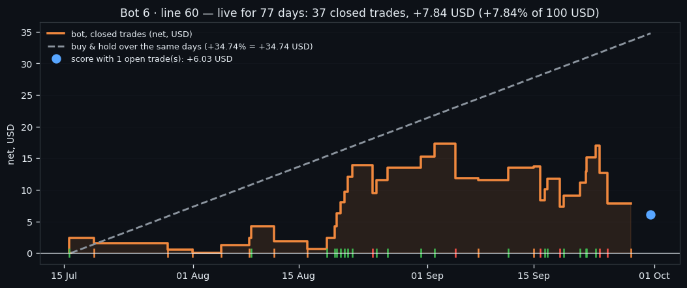
Line 60 liveBot 6, Line 60: A Bot That Mostly Waits — and What the Clock Costs It
Line 60 of Bot 6 holds one position at a time and has been live since 15 July 2026: 33 days, 9 closed trades, +0.68 USD on a 100 USD slot, win rate 44%. Its entry gate is agreement between two independent models plus a context check; its exits are a 2% target, a 4% stop and a hard 72-hour clock. This is the complete record, including the comparison with its twin line running the identical recipe — which is the part that keeps us honest.
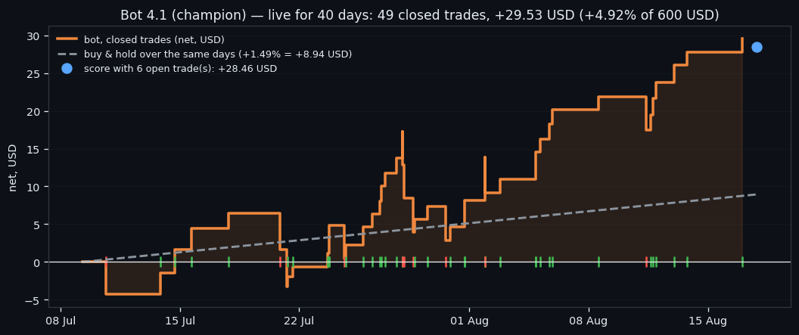
Bot 4 liveBot 4: What Forty Days of Live Paper Trading Actually Look Like
Bot 4 has been trading live on paper since 09 July 2026 — 40 days, 49 closed trades, +29.53 USD on 600 USD of capital, a 80% win rate, against +1.49% on average for buying and holding the same coins. This is the full record: the rules it never deviates from, every closed trade, the open positions right now, and the hourly referee that can hand the account to a freshly trained challenger — which has happened 4 times so far.
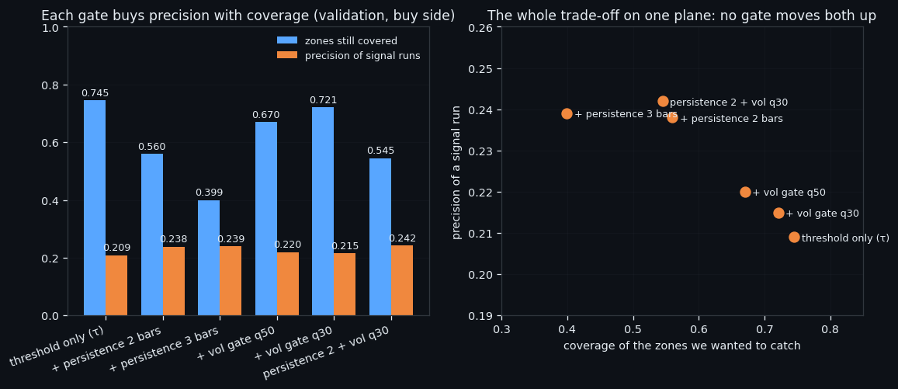
GatesGates: The Part of a Trading Bot That Decides Not to Trade
A trading bot's model produces a number; its gate decides whether that number is worth a fee. This article measures what gates actually cost. Demanding a signal persist two bars instead of one raises precision from 0.209 to 0.238 and throws away 25% of the opportunities. Bot 4 stacks four gates and still lands inside the noise across random seeds. Bot 6 gates on agreement between two models — and two live lines running that identical gate for a month finished +11.81 and +0.68 USD apart. Gates buy precision with coverage; nothing here is free.
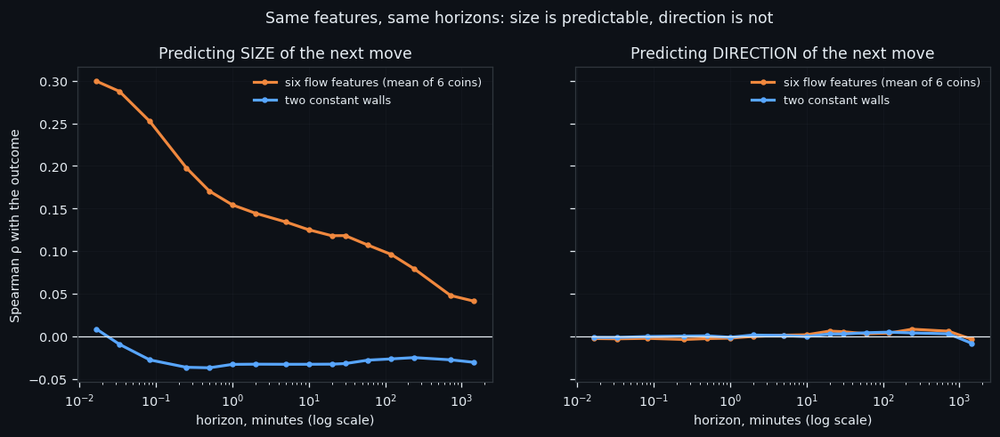
How far, not which wayThe Order Book Tells You How Far, Never Which Way
We asked eight order-book features the same two questions at 16 horizons from one second to a day, on six coins: how far will the price move, and which way. Size answers — ρ 0.30 at a second, still 0.11 at an hour. Direction never does: -0.002 at a minute, -0.003 at a day. Then we bet real rules on both answers over 30 out-of-sample days: the volatility bet makes +4.97 bps a trade, the direction bet loses 5.95. This is the measurement that decides what our bots are allowed to bet on.
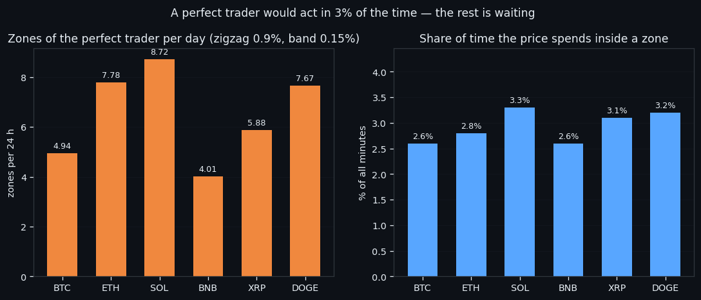
Typhoon+Typhoon+: A Signal That Finds the Perfect Trader's Zones — and Still Loses Money
We drew the zones a perfect trader would use — 0.9% zigzag turns, a 0.15% band around each one — and found that the price sits inside them barely 3% of the time. A single gradient-boosting model, pooled over six coins, then finds 74% of those zones on days it never saw. It also fires false 86% of the time, leans mostly on price geometry rather than the order book, and loses 122% when traded plainly against 93% for buy & hold. This is the article about a signal that finds the right places and still cannot pay the fee.
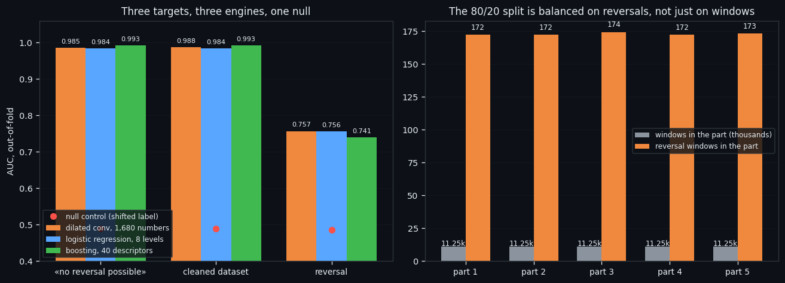
Moves, not noiseWe Taught a Network to See a Move. It Only Heard How Loud It Was.
We trained three networks on the same 56,263 order-book windows and learned two things we did not want to learn. A single number — how loud the window is — matches a convolutional network on all 1,680 of them (0.7575 against 0.7571). And once you match windows by that number, the inflow features that carried the whole model separate nothing at all. What does survive is small, directional, and points at a different kind of bot than the one we set out to build.
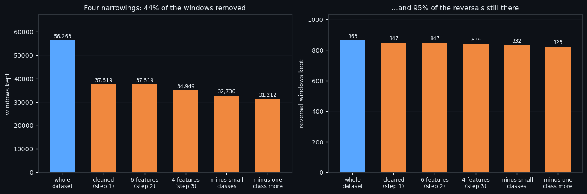
Dataset cleaning recipeA Recipe, Not a Result: How We Clean an Order-Book Dataset
This is the least glamorous and most useful study of the series: not a finding, but a procedure. How to take a raw dataset of order-book windows and produce a clean one — 56,263 windows in, 31,212 out, 95% of the reversals still there — with every step checked, every trap written down, and the whole thing runnable on another coin by one command.
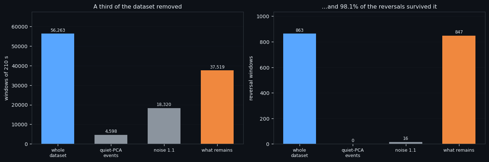
The cleaned datasetThrowing Away a Third of the Data and Keeping 98% of the Reversals
If a third of your data provably contains almost nothing you are looking for, it should not be in the training set. We removed 18,744 of 56,263 windows — everything two independent definitions of 'quiet' agree on — and kept 98.1% of all the reversal windows.
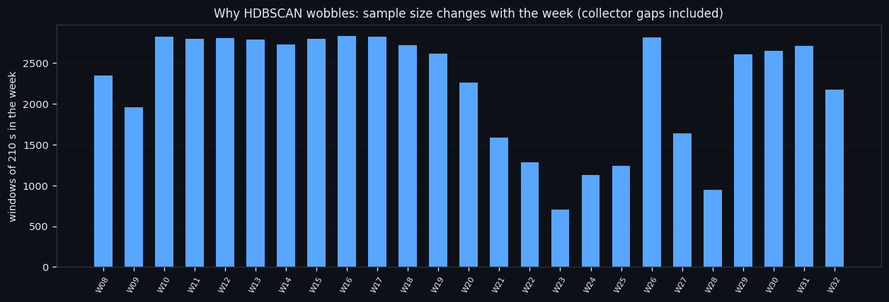
Week by weekTwenty-Five Weeks, Twenty-Five Rebuilds: Which Clustering Survives
A clustering that only exists once is a story, not a result. So we rebuilt it 25 times — every week of the dataset from scratch, its own PCA, its own UMAP, its own clusters — and compared each week with the answer found on the whole dataset. One of the two methods reproduces. The other does not, and it is the fashionable one.
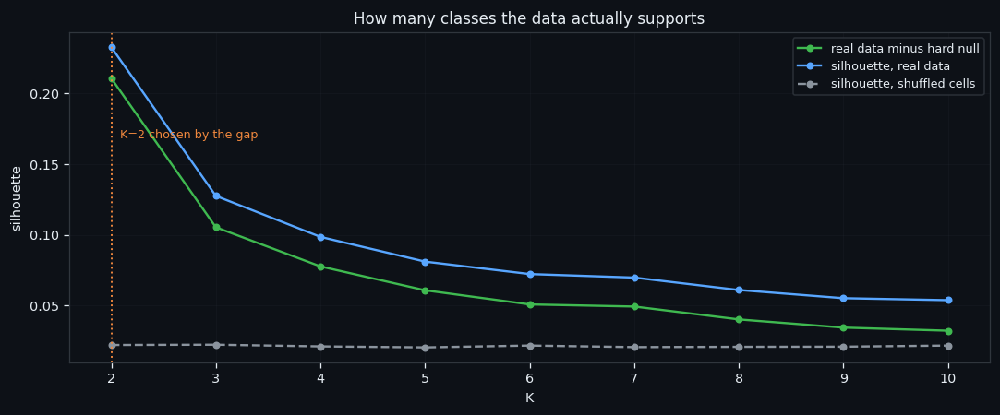
The falling halfTops Hide, Bottoms Don't: an Asymmetry We Did Not Expect
This is the mirror of the previous study: the fall from a top to a bottom, 27,180 windows, the same pipeline to the letter. The structure repeats — and one number does not. Tops hide from the order book four times more often than bottoms do.
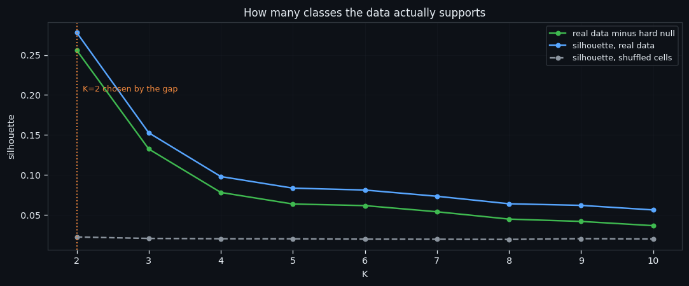
The rising halfThe Rising Half of a Move: What the Order Book Looks Like Between a Bottom and a Top
Half of every price move is a climb from a bottom to a top. We took only that half — 26,921 windows of the order book — and clustered it blind. The structure that comes out is the same one the whole dataset gives, which is good news: it means the classes are not an artefact of mixing rises and falls together.
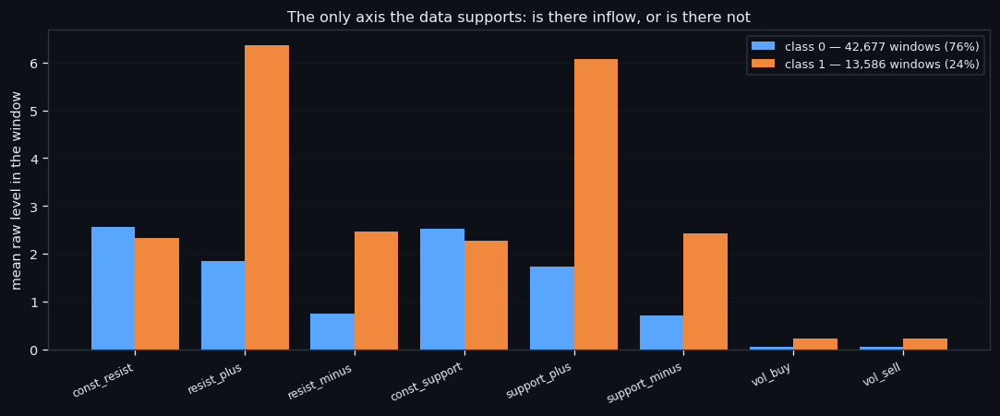
Classes without a teacherOne Axis, Again: Clustering 56,000 Order-Book Windows Without a Teacher
Take 56,263 windows of the order book, 210 seconds each, eight features per second. Tell the algorithm nothing — not the price, not the time, not our own signals. Ask only one thing: does this pile of windows fall apart into groups by itself? It does, along exactly one axis, and that axis is not the one anybody hopes for.
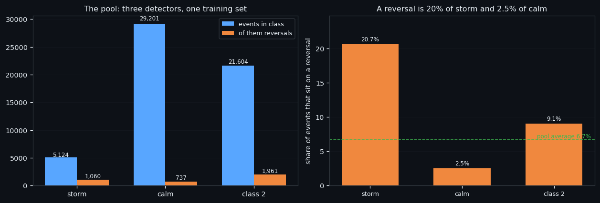
Pooled reversal modelOne Network for Three Market States: What a Pooled Reversal Model Learns
We trained one network on the events of three different market states at once — 55,929 events, 3,758 of which sit on a real turning point — and asked it a single question: is this event a reversal or an ordinary event of its own class? The answer is interesting in a way we did not plan: the model works, the validation set lies about which model is best, and an unsupervised split of the same pool finds classes that have nothing to do with reversals at all.
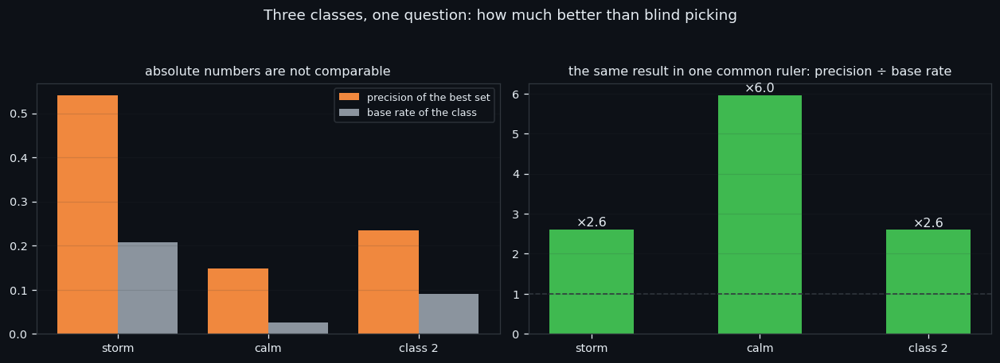
Separating the signalThree Classes, One Question: What It Takes to Separate a Reversal
Three market states, one question: can an order-book event that sits on a turning point be told apart from the ordinary events of its own class? This is the overview of that work — the three per-class studies side by side, every engine we tried in between, and the parts that hurt: a grid search that bought 0.02 AUC, a network on 1,680 numbers that lost to a single average, and a threshold that looked like 63% precision until it was asked to survive two months of new data, where it became 39%.
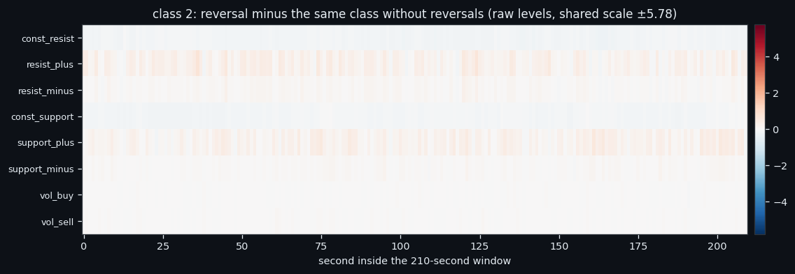
Class 2 reversalsClass 2: the Middle State Where No Single Feature Wins
The **class 2** state fires on 21,704 windows of this dataset, and 1,961 of them (9.0%) sit on a turning point of price. This page asks one question and answers it with one frozen network: can a reversal be told apart from the ordinary events of its own class, and which of the eight order-book features carries that difference? Best single feature: `vol_buy` at 15.8% precision. Best set: 6 features at 23.5% precision and 23.6% recall, against a base rate of 9.0% — ×2.6.
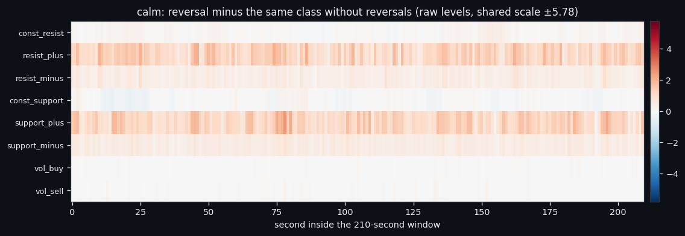
Calm reversalsReversals in a Quiet Market: Where 2.5% of Events Hide
The **calm** state fires on 29,303 windows of this dataset, and 739 of them (2.5%) sit on a turning point of price. This page asks one question and answers it with one frozen network: can a reversal be told apart from the ordinary events of its own class, and which of the eight order-book features carries that difference? Best single feature: `vol_buy` at 10.8% precision. Best set: 8 features at 14.9% precision and 15.3% recall, against a base rate of 2.5% — ×6.0.
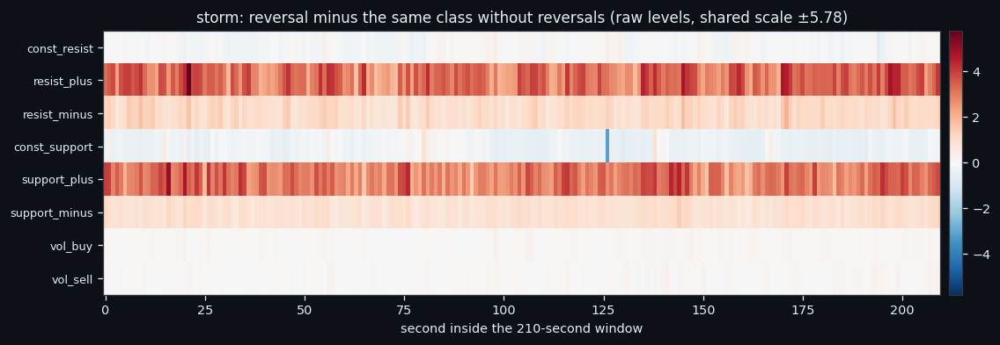
Storm reversalsThe Storm Class: Which Order-Book Feature Marks a Reversal
The **storm** state fires on 5,249 windows of this dataset, and 1,085 of them (20.7%) sit on a turning point of price. This page asks one question and answers it with one frozen network: can a reversal be told apart from the ordinary events of its own class, and which of the eight order-book features carries that difference? Best single feature: `vol_buy` at 49.5% precision. Best set: 5 features at 54.1% precision and 50.0% recall, against a base rate of 20.7% — ×2.6.
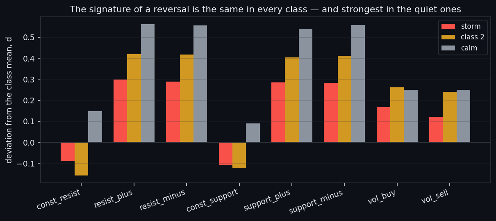
Reversal DNAWe Went Looking for the DNA of a Reversal. We Found a Ceiling Instead.
An earlier study on this dataset (175 days of BTC) found 271 order-book events that sit exactly on the turning points of price, and showed that a model cannot separate them from the thousands of ordinary events of their own class. This study asks a narrower question: forget separating a reversal from its class — is there anything, on its own, that a reversal event's 271 examples share? Nine different methods attack the question from nine angles: a two-condition threshold rule, a raw-vector kinship check, a full neural detector, a scan for the shortest useful slice of the window, four models on four quarters of it, one model on all of its 30-second slices at once, and three independent models — one per parent market state. Every method finds something real, reproducible, and well above every null control we built. None of them clears the bar a trading signal needs. The best operating point we found, buried inside the loudest of four market states, is right roughly one time in three.
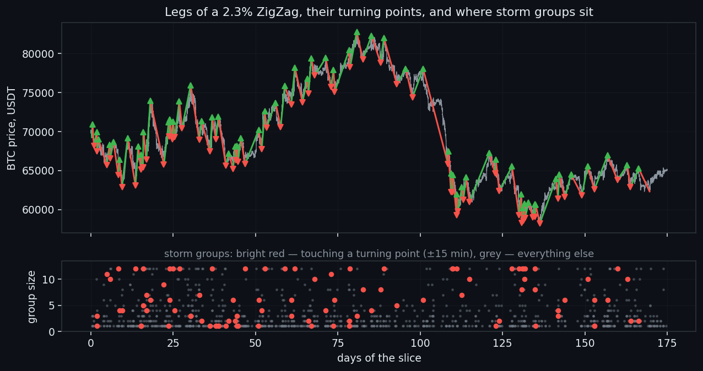
SignalsWe Found the Reversal Signal. Machine Learning Could Not Tell It Apart.
A market moves in legs: a few percent one way, a turning point, then a few percent the other. This study asks whether the order book carries an event that marks the turn — and whether that event can be separated from the thousands of ordinary events of the same class. On 175 days of BTC the first half works: groups of signals pile up at turning points 3.7× more often than chance, every class shows the same reversal signature, and inside a storm the shape of the flows tells a top from a bottom where price itself says nothing. The second half does not. Every way we tried to learn 'is this a reversal' landed on top of its own null control, and a class retrained with all reversal windows removed still fires on them — harder than on its ordinary events. The signal is real; the discriminator is not.
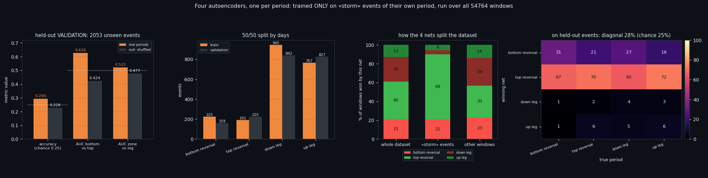
NetsSixteen Networks, One Working Answer — and the Price Benchmark That Nearly Killed It
We trained sixteen one-class autoencoders on Bitcoin order-book windows: four market states, and inside each state one network per phase of the price move. Each network saw only its own kind of window and nothing else — no negative examples at all. One thing out of sixteen works: inside a storm you can tell a bottom reversal from a top one. On half the data that looked like AUC 0.6264; measured properly on all 800 events it is 0.5928. Then a one-line price benchmark scored 0.8548 on the same question. This article is about what survives that, and where it survives.
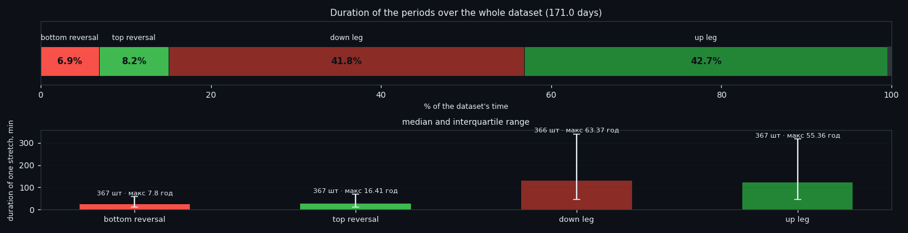
StatesDoes the Phase of a Move Change What the Order Book Looks Like?
We have four detectors of market state and a map of where price is in its move — reversal zones and the legs between them. Laying one over the other answers a question that sounds simple and is not: does the phase of a move change what a market state looks like? On 171 days of BTC the answer splits. The count of events barely moves — each class fires roughly in proportion to how long the phase lasts. What moves is their strength, and only for the quiet classes. And in one narrow place the order book finally beats price: telling a top from a bottom inside a storm.
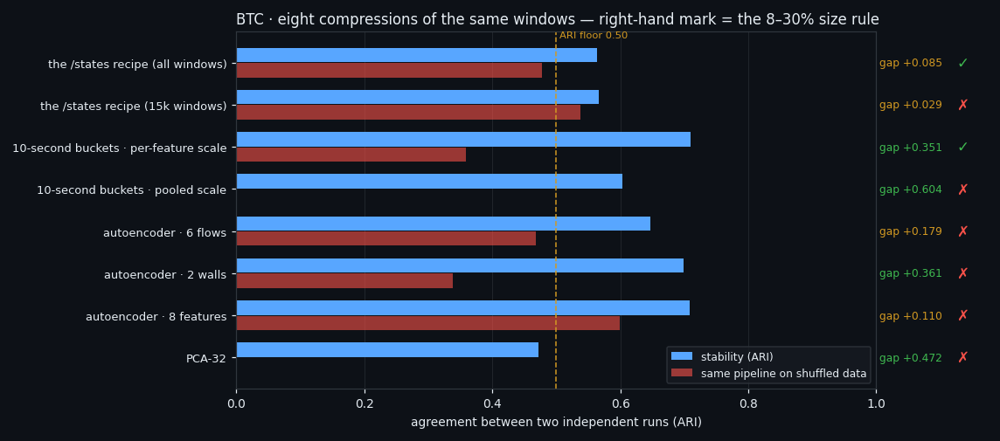
AutoencoderEight Ways to Compress 210 Seconds: the Autoencoder That Lost to PCA
We cut 170 days of per-second Bitcoin order-book data into 50,143 back-to-back windows and pushed them through eight different compressions — PCA, a convolutional autoencoder, and six variants of both — to see whether a network finds market structure a linear method misses. It does not. Its raw stability is the best in the table and most of that stability survives when the data is shuffled into noise, which means it was never structure at all.
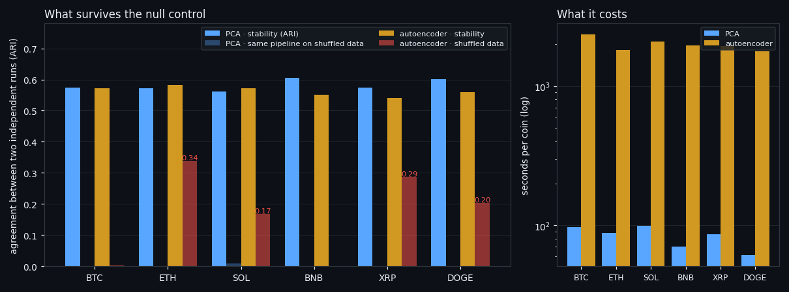
Market statesTwo Poles of Market Activity, Found Without a Teacher on Six Coins
We cut 122–141 days of per-second order-book data on 6 coins into 164,342 windows of 210 seconds, showed a clustering pipeline nothing but the eight order-book features, and asked whether the market falls into natural states. It does — two poles of flow activity with a wide grey zone between them — and the same pipeline run on shuffled data produces nothing, which is what makes the answer worth reporting. The walls turn out to be irrelevant to the split, and the autoencoder we brought in to beat PCA lost to it.
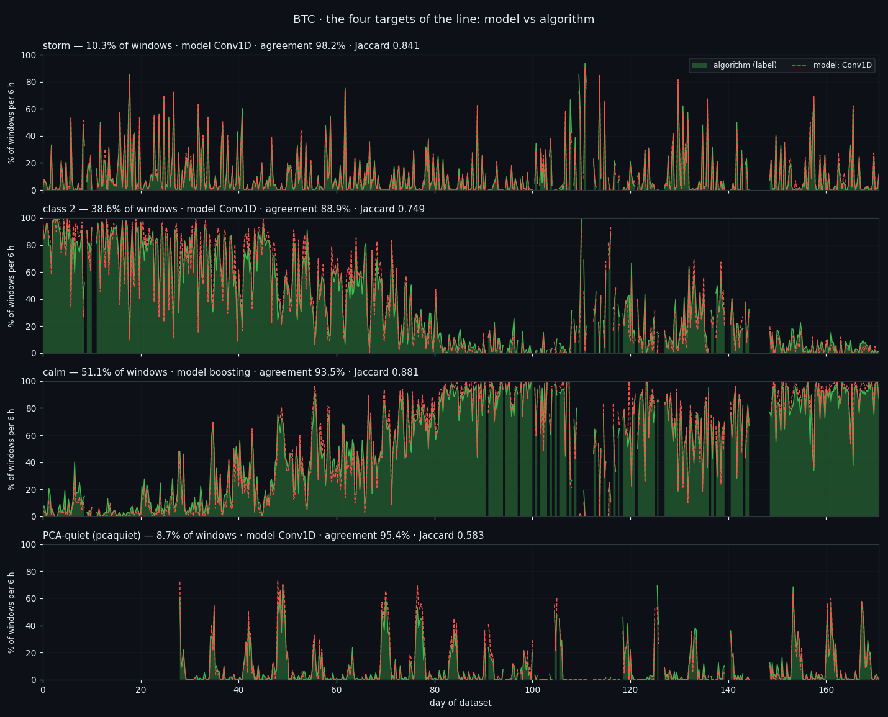
ReplicationFour Market States, Found Twice by Two Independent Pipelines
Four market states, found twice by two pipelines that share no code. We wrote our research recipe down as an executable diary, then wrote a second implementation from that text alone — different seed, different block split, different network initialisation — and ran it over the same 54,764 windows of BTC order-book data. The states came back: 93.0% of windows landed in the same one (ARI 0.7726), and two independently trained detectors fire on the same 98.5% of windows. Where both fire, the next hour's price range is ×1.432 the median of the same day.
Local tops and bottoms in the order book: what four trained models actually see
We marked every local top and bottom on 171 days of per-second Bitcoin order-book data — 734 of them, defined by a rule rather than by hand — and asked four trained market-state detectors whether they can see them. The zone itself is invisible. The moment of the extremum is not, and neither is 'an extremum within the next hour'. But a plain price range from the same window beats the order book at both, and the honest edge turns out to live somewhere else entirely: in telling a top from a bottom when price itself has nothing to say.
There Are No Classes in the Order Book — Only One State That Survives
We locked a 210-second window to its own 1,680 numbers — eight order-book features, no norm, no price, no clock — and asked whether the market falls into classes. It does not: the gap statistic sits at 0.0017, silhouette matches noise, and at some K the shuffled null is more stable than the data. One state survives every check: 9.8% of windows where flows run hot and both walls thin out, followed by ×1.78 the usual hourly range.
Event Classes Found Without a Teacher: 3 Survive, 60% Are Noise
We asked the order book to sort its own events into classes — 2,786 events, eight features, no price and no human labels. Out of 512 configurations only 5 produced anything stable, 60% of events belong to no class at all, and the three that do exist raise volatility while leaving direction at a coin flip.
The Alphabet of the Order Book: 6,561 Possible States, 333 Real Ones
We described the order book as a single word: eight features, three states each. Of the 6,561 words that could exist, only 333 ever occur — and when we tested that alphabet out of sample, it described the market well and predicted it poorly.
From Calm to Calm: a Standard for What Counts as a Signal (BTC)
We stopped defining market signals with a stopwatch. A signal is a continuous departure from calm, bounded by calm on both sides — the market decides where it starts and ends. Here is the standard, applied second by second to 167 days of BTC, with every event classified and located on the price path.
Side Against Side: Resistance and Support Compared
We put all six order-book features grouped into the resistance side and the support side into one study and asked how the pieces relate, which one leads, and what the combination predicts. Same boundary as always: it speaks about size, not side.
Flow Against the Wall: When Volume Meets Resting Liquidity
We put executed volume hitting the resting wall on the opposite side into one study and asked how the pieces relate, which one leads, and what the combination predicts. Same boundary as always: it speaks about size, not side.
The Life of a Sell Wall: Standing, Growing, Thinning
We put the three phases of the same sell-side wall — how much stands there, what arrives, what leaves into one study and asked how the pieces relate, which one leads, and what the combination predicts. Same boundary as always: it speaks about size, not side.
Executed Sell Volume, Measured Alone
We isolated executed sell volume — one feature, no partner, no composite — and measured what it predicts second by second across six coins. The answer is the size of the next move, never its side.
Executed Buy Volume, Measured Alone
We isolated executed buy volume — one feature, no partner, no composite — and measured what it predicts second by second across six coins. The answer is the size of the next move, never its side.
Drain Out of the Buy Wall: Liquidity Leaving Before the Move
We isolated drain out of the buy wall — one feature, no partner, no composite — and measured what it predicts second by second across six coins. The answer is the size of the next move, never its side.
Build-Up Into the Buy Wall: What Arriving Liquidity Predicts
We isolated build-up into the buy wall — one feature, no partner, no composite — and measured what it predicts second by second across six coins. The answer is the size of the next move, never its side.
Drain Out of the Sell Wall: Liquidity Leaving Before the Move
We isolated drain out of the sell wall — one feature, no partner, no composite — and measured what it predicts second by second across six coins. The answer is the size of the next move, never its side.
Build-Up Into the Sell Wall: What Arriving Liquidity Predicts
We isolated build-up into the sell wall — one feature, no partner, no composite — and measured what it predicts second by second across six coins. The answer is the size of the next move, never its side.
The Resting Buy Wall, Measured Alone
We isolated the resting buy wall — one feature, no partner, no composite — and measured what it predicts second by second across six coins. The answer is the size of the next move, never its side.
The Resting Sell Wall, Measured Alone
We isolated the resting sell wall — one feature, no partner, no composite — and measured what it predicts second by second across six coins. The answer is the size of the next move, never its side.
The Support Cycle: Liquidity Arriving vs Leaving
We measured the same buy-side wall growing and thinning second by second across six coins, and asked the only question that matters: does it tell you anything about what happens next? It does — about size, not direction.
The Resistance Cycle: Liquidity Arriving vs Leaving
We measured the same sell-side wall growing and thinning second by second across six coins, and asked the only question that matters: does it tell you anything about what happens next? It does — about size, not direction.
Liquidity Arriving: What a Growing Wall Says Next
We measured fresh resting liquidity arriving into the book second by second across six coins, and asked the only question that matters: does it tell you anything about what happens next? It does — about size, not direction.
Liquidity Pulled: What Happens When a Wall Drains
We measured resting liquidity being pulled away from the book second by second across six coins, and asked the only question that matters: does it tell you anything about what happens next? It does — about size, not direction.
The Wall That Goes Quiet: What Resting Liquidity Predicts
We measured resting limit liquidity sitting on both sides of the book second by second across six coins, and asked the only question that matters: does it tell you anything about what happens next? It does — about size, not direction.
About Market Research Lab — What We Collect and Why
Most market commentary is storytelling. We built something testable instead: 166 days of second-by-second order-book data across six coins, and a rule that nothing gets published unless it survives out-of-sample.
Volume Is the Fuel — Not the Steering Wheel
Everyone asks whether volume pushes price up or down. We measured it second-by-second on six coins. The honest answer surprises people.
Order flow predicts how much, not which way
Across six coins, flow surges line up with bigger moves — but not their direction. What that means for anyone trading the tape.